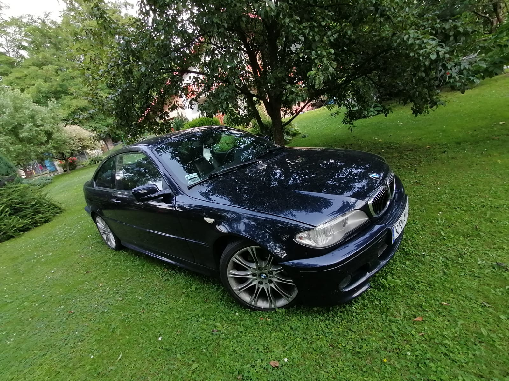

Kilka słów na początek
Przyszła na świat w Ratyzbonie, w kwietniu 2004 roku. Pochodzi ze znanej, europejskiej rodziny, której korzenie sięgają począku poprzedniego stulecia.
Wielu uważa, że posiada wyjątkową urodę, bogate wnętrze oraz wielkie serce!
Zgadzam się z tym w całej
rozciągłości.
Poznaliśmy się ponad pięc lat temu i od początku wiedziałem, że stracę dla niej głowę! Uwielbiam wspólne podróże, lubie nawet jak "gada" kiedy się wkręca.
Ten charakter!
Jak większość kobiet, uwielbia słoneczko, natomiast co nietypowe, nie znosi być wystawiona na jego bezpośrednie promienie. Kiedy pada, w ogóle nie wychodzi z domu - phi, księżniczka!
Jak na kobietę przystało, lubi zapach pięniądza - a to nowe laczki jej w głowie, a to kolejne kosmetyki! Poza tym - niby księżniczka a lubi wypić!
Ten dziwny związek trwa do dziś i nic nie wskazuje, że miałby się wkrótce zakończyć, jak ludzie mawiają: miłość do grobowej deski!

Wróc na górę
Trochę historii
Nietypowy wstęp, jednak dość dobrze oddaje moją relację z tym samochodem. Czym jednak właściwie jest E46? Jest to czwarta generacja popularnej serii 3 od BMW. Zaprojektowana i pokazana światu ponad 20 lat temu (pełnoletnia!). Samochód dostępny był w następujących wersjach nadwoziowych:
- sedan, produkowany od grudnia 1997 do maja 2005,
- coupé, produkowane od grudnia 1998 do maja 2006,
- cabrio, produkowane od grudnia 1999 do listopada 2006,
- kombi (zwane przez BMW Touringiem), produkowane od stycznia 1999 do maja 2005,
- hatchback (nazwany Compactem), produkowany od kwietnia 2000 do grudnia 2004.
Do gamy modeli dodano również sportową M3 (tylko coupé i cabrio), powstało też kilka wersji specjalnych. E46 brało również udział w motorsporcie, w wyścigach samochodów turystycznych.
Jesienią 2001 poddano liftingowi sedana i kombi, jesienią 2002 zaś, coupé i cabrio.
Wróc na góręBudowa
BMW twierdziło, że karoseria E46 była ok 70% sztywniejsza niż u poprzednika (E36), użyto też aluminium
zamiast stali do elementów zawieszenia celem zmniejszenia masy.
Auto było dostępne ze skrzyniami manualnymi (5-cio oraz 6-cio biegowymi) a także z automatami (4-ro i 5-cio biegowymi). Opcjonalnie można było wybrać napęd na 4 koła.
E46 otrzymało też pokaźną gamę silników w trakcie swojego "życia". Szczegóły można znaleźć w tabelach poniżej.
| Model | Lata produkcji | Silnik | Moc | Moment |
|---|---|---|---|---|
| 316i | 1999-2001 | R4 1.9l, M43B19 | 103KM | 165Nm |
| 2001-2004 | R4 1.6l, N40B16 | 115KM | 150Nm | |
| 2001-2004 | R4 1.8l, N42B18 | 114KM | 170Nm | |
| 2004-2005 | R4 1.8l, N46B18 | 114KM | 170Nm | |
| 318i | 1998-2001 | R4 1.9l, M43B19 | 117KM | 180Nm |
| 2001-2005 | R4 2.0l, N42B20 | 141KM | 200Nm | |
| 2003-2006 | R4 2.0l, N46B20 | 150KM | 200Nm | |
| 320i | 1998-2000 | R6 2.0l, M52TUB20 | 148KM | 190Nm |
| 2000-2006 | R6 2.2l, M54B22 | 168KM | 210Nm | |
| 323i | 1998-2000 | R6 2.5l, M52TUB25 | 169KM | 245Nm |
| 325i | 2001-2006 | R6 2.5l, M54B25 | 189KM | 245Nm |
| 328i | 1998-2000 | R6 2.8l, M52TUB28 | 190KM | 280Nm |
| 330i | 2000-2006 | R6 3.0l, M54B30 | 231KM | 300Nm |
| M3 | 2000-2006 | R6 3.2l, S54B32 | 340KM | 365Nm |
| M3 CSL | 2003-2004 | R6 3.2l, S54B32 | 360KM | 370Nm |
| Model | Lata produkcji | Silnik | Moc | Moment |
|---|---|---|---|---|
| 318d | 2001-2003 | R4 2.0l, M47D20 | 114KM | 265Nm |
| 2003-2005 | R4 2.0l, M47TUD20 | 114KM | 280Nm | |
| 320d | 1998-2001 | R4 2.0l, M47D20 | 134KM | 280Nm |
| 2001-2006 | R4 2.0l, M47TUD20 | 148KM | 330Nm | |
| 330d | 1999-2002 | R6 3.0l, M57D30 | 181KM | 390Nm |
| 2003-2005 | R6 3.0l, M57TUD30 | 181KM | 410Nm |
E46 dzisiaj / sytuacja rynkowa
Dzisiaj, po ponad dwudziestu latach od premiery, dobrze utrzymane E46 nadal może się podobać (zwłaszcza
wersje poliftowe). Niestety z uwagi na wiek, tych dobrze utrzymanych jest coraz mniej a stan wielu jest
opłakany.
Wszystko to powoduje, że ceny egemplarzy używanych potrafią wahać się od kilku tysięcy
złotych do ok 30-40 tysięcy za egzemplarze w doskonałej kondycji. Nie wspominając nawet o przeszło
300 tysiącach zł (!) za topowe M3 CSL.